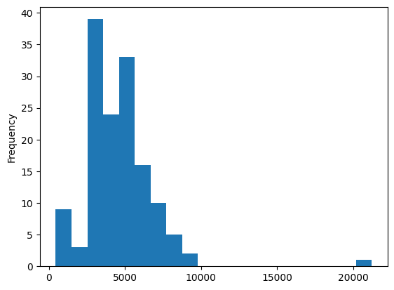

import pandas as pd
import numpy as np
import matplotlib.pyplot as pltdf에서 사기거래가 한 번이라도 있었던 사람의 데이터만 모아서 학습시켜봄. 즉, 사기거래가 한번이라도 없던 사람의 데이터는 제거했다.
_df = pd.read_csv("fraudTrain.csv")cus_list = set(_df.query('is_fraud==1').cc_num.tolist())
_df2 = _df.query("cc_num in @ cus_list")
_df2 = _df2.assign(time= list(map(lambda x: int(x.split(' ')[-1].split(':')[0]), _df2['trans_date_trans_time'])))_df2.shape(651430, 24)_df2.columnsIndex(['Unnamed: 0', 'trans_date_trans_time', 'cc_num', 'merchant', 'category',
'amt', 'first', 'last', 'gender', 'street', 'city', 'state', 'zip',
'lat', 'long', 'city_pop', 'job', 'dob', 'trans_num', 'unix_time',
'merch_lat', 'merch_long', 'is_fraud', 'time'],
dtype='object')_df2.info()<class 'pandas.core.frame.DataFrame'>
Int64Index: 651430 entries, 3 to 1048574
Data columns (total 24 columns):
# Column Non-Null Count Dtype
--- ------ -------------- -----
0 Unnamed: 0 651430 non-null int64
1 trans_date_trans_time 651430 non-null object
2 cc_num 651430 non-null float64
3 merchant 651430 non-null object
4 category 651430 non-null object
5 amt 651430 non-null float64
6 first 651430 non-null object
7 last 651430 non-null object
8 gender 651430 non-null object
9 street 651430 non-null object
10 city 651430 non-null object
11 state 651430 non-null object
12 zip 651430 non-null int64
13 lat 651430 non-null float64
14 long 651430 non-null float64
15 city_pop 651430 non-null int64
16 job 651430 non-null object
17 dob 651430 non-null object
18 trans_num 651430 non-null object
19 unix_time 651430 non-null int64
20 merch_lat 651430 non-null float64
21 merch_long 651430 non-null float64
22 is_fraud 651430 non-null int64
23 time 651430 non-null int64
dtypes: float64(6), int64(6), object(12)
memory usage: 124.3+ MB_df2["is_fraud"].value_counts()0 645424
1 6006
Name: is_fraud, dtype: int64_df2["is_fraud"].value_counts()/len(_df2)0 0.99078
1 0.00922
Name: is_fraud, dtype: float64_df2.head()| Unnamed: 0 | trans_date_trans_time | cc_num | merchant | category | amt | first | last | gender | street | ... | long | city_pop | job | dob | trans_num | unix_time | merch_lat | merch_long | is_fraud | time | |
|---|---|---|---|---|---|---|---|---|---|---|---|---|---|---|---|---|---|---|---|---|---|
| 3 | 3 | 2019-01-01 0:01 | 3.534090e+15 | fraud_Kutch, Hermiston and Farrell | gas_transport | 45.00 | Jeremy | White | M | 9443 Cynthia Court Apt. 038 | ... | -112.1138 | 1939 | Patent attorney | 1967-01-12 | 6b849c168bdad6f867558c3793159a81 | 1325376076 | 47.034331 | -112.561071 | 0 | 0 |
| 5 | 5 | 2019-01-01 0:04 | 4.767270e+15 | fraud_Stroman, Hudson and Erdman | gas_transport | 94.63 | Jennifer | Conner | F | 4655 David Island | ... | -75.2045 | 2158 | Transport planner | 1961-06-19 | 189a841a0a8ba03058526bcfe566aab5 | 1325376248 | 40.653382 | -76.152667 | 0 | 0 |
| 6 | 6 | 2019-01-01 0:04 | 3.007470e+13 | fraud_Rowe-Vandervort | grocery_net | 44.54 | Kelsey | Richards | F | 889 Sarah Station Suite 624 | ... | -100.9893 | 2691 | Arboriculturist | 1993-08-16 | 83ec1cc84142af6e2acf10c44949e720 | 1325376282 | 37.162705 | -100.153370 | 0 | 0 |
| 7 | 7 | 2019-01-01 0:05 | 6.011360e+15 | fraud_Corwin-Collins | gas_transport | 71.65 | Steven | Williams | M | 231 Flores Pass Suite 720 | ... | -78.6003 | 6018 | Designer, multimedia | 1947-08-21 | 6d294ed2cc447d2c71c7171a3d54967c | 1325376308 | 38.948089 | -78.540296 | 0 | 0 |
| 8 | 8 | 2019-01-01 0:05 | 4.922710e+15 | fraud_Herzog Ltd | misc_pos | 4.27 | Heather | Chase | F | 6888 Hicks Stream Suite 954 | ... | -79.6607 | 1472 | Public affairs consultant | 1941-03-07 | fc28024ce480f8ef21a32d64c93a29f5 | 1325376318 | 40.351813 | -79.958146 | 0 | 0 |
5 rows × 24 columns
df = _df2import os
import math
import numpy as np
import networkx as nx
import matplotlib.pyplot as plt
%matplotlib inline
default_edge_color = 'gray'
default_node_color = '#407cc9'
enhanced_node_color = '#f5b042'
enhanced_edge_color = '#cc2f04'def build_graph_bipartite(df_input, graph_type=nx.Graph()):
df=df_input.copy()
mapping={x:node_id for node_id, x in enumerate(set(df["cc_num"].values.tolist()+\
df["merchant"].values.tolist()))}
df["from"]=df["cc_num"].apply(lambda x:mapping[x]) #엣지의 출발점
df["to"]=df["merchant"].apply(lambda x:mapping[x]) #엣지의 도착점
df = df[['from', 'to', "amt", "is_fraud"]].groupby(['from','to']).agg({"is_fraud":"sum","amt":"sum"}).reset_index()
df["is_fraud"]=df["is_fraud"].apply(lambda x:1 if x>0 else 0)
G=nx.from_edgelist(df[["from","to"]].values, create_using=graph_type)
nx.set_edge_attributes(G, {(int(x["from"]),int(x["to"])):x["is_fraud"] for idx, x in df[["from","to","is_fraud"]].iterrows()}, "label") #엣지 속성 설정,각 속성의 사기 여부부
nx.set_edge_attributes(G,{(int(x["from"]),int(x["to"])):x["amt"] for idx,x in df[["from","to","amt"]].iterrows()}, "weight") # 엣지 속성 설정, 각 엣지의 거래 금액
return Gdef build_graph_tripartite(df_input, graph_type=nx.Graph()):
df=df_input.copy()
mapping={x:node_id for node_id, x in enumerate(set(df.index.values.tolist() +
df["cc_num"].values.tolist() +
df["merchant"].values.tolist()))}
df["in_node"]= df["cc_num"].apply(lambda x: mapping[x])
df["out_node"]=df["merchant"].apply(lambda x:mapping[x])
G=nx.from_edgelist([(x["in_node"], mapping[idx]) for idx, x in df.iterrows()] +\
[(x["out_node"], mapping[idx]) for idx, x in df.iterrows()], create_using=graph_type)
nx.set_edge_attributes(G,{(x["in_node"], mapping[idx]):x["is_fraud"] for idx, x in df.iterrows()}, "label")
nx.set_edge_attributes(G,{(x["out_node"], mapping[idx]):x["is_fraud"] for idx, x in df.iterrows()}, "label")
nx.set_edge_attributes(G,{(x["in_node"], mapping[idx]):x["amt"] for idx, x in df.iterrows()}, "weight")
nx.set_edge_attributes(G,{(x["out_node"], mapping[idx]):x["amt"] for idx, x in df.iterrows()}, "weight")
return G
G_bu = build_graph_bipartite(df, nx.Graph(name="Bipartite Undirect"))G_tu = build_graph_tripartite(df, nx.Graph())for G in [G_bu, G_tu]:
print("nede:", nx.number_of_nodes(G))
for G in [G_bu, G_tu]:
print("edge:",nx.number_of_edges(G))nede: 1289
nede: 652719
edge: 268964
edge: 1302860for G in [G_bu, G_tu]:
print(nx.degree_pearson_correlation_coefficient(G))-0.37874509971252246
-0.7222260615980979import networkx as nx
import communityimport community
for G in [G_bu, G_tu]:
parts = community.best_partition(G, random_state=42, weight='weight')communities = pd.Series(parts)print(communities.value_counts().sort_values(ascending=False))2 21225
34 9652
117 9362
3 8477
78 8384
...
127 812
110 793
121 785
103 449
95 439
Length: 142, dtype: int64communities.value_counts().plot.hist(bins=20)<Axes: ylabel='Frequency'>
graphs = [] # 부분그래프 저장
d = {} # 부정 거래 비율 저장
for x in communities.unique():
tmp = nx.subgraph(G, communities[communities==x].index)
fraud_edges = sum(nx.get_edge_attributes(tmp, "label").values())
ratio = 0 if fraud_edges == 0 else (fraud_edges/tmp.number_of_edges())*100
d[x] = ratio
graphs += [tmp]
pd.Series(d).sort_values(ascending=False)99 2.549511
69 2.080000
4 1.996198
43 1.969697
133 1.871491
...
127 0.246609
91 0.120192
104 0.115207
103 0.000000
121 0.000000
Length: 142, dtype: float64from sklearn.utils import resample
df_majority = df[df.is_fraud==0]
df_minority = df[df.is_fraud==1]
df_maj_dowsampled = resample(df_majority,
n_samples=len(df_minority),
random_state=42)
df_downsampled = pd.concat([df_minority, df_maj_dowsampled])
print(df_downsampled.is_fraud.value_counts())
G_down = build_graph_bipartite(df_downsampled)1 6006
0 6006
Name: is_fraud, dtype: int64from sklearn.model_selection import train_test_split
train_edges, test_edges, train_labels, test_labels = train_test_split(list(range(len(G_down.edges))),
list(nx.get_edge_attributes(G_down, "label").values()),
test_size=0.20,
random_state=42)edgs = list(G_down.edges)
train_graph = G_down.edge_subgraph([edgs[x] for x in train_edges]).copy()
train_graph.add_nodes_from(list(set(G_down.nodes) - set(train_graph.nodes)))from node2vec import Node2Vec
from node2vec.edges import HadamardEmbedder, AverageEmbedder, WeightedL1Embedder, WeightedL2Embedder
node2vec_train = Node2Vec(train_graph, weight_key='weight')
model_train = node2vec_train.fit(window=10)Generating walks (CPU: 1): 0%| | 0/10 [00:00<?, ?it/s]Generating walks (CPU: 1): 100%|██████████| 10/10 [00:03<00:00, 3.09it/s]from sklearn.ensemble import RandomForestClassifier
from sklearn import metrics
classes = [HadamardEmbedder, AverageEmbedder, WeightedL1Embedder, WeightedL2Embedder]
for cl in classes:
embeddings_train = cl(keyed_vectors=model_train.wv)
train_embeddings = [embeddings_train[str(edgs[x][0]), str(edgs[x][1])] for x in train_edges]
test_embeddings = [embeddings_train[str(edgs[x][0]), str(edgs[x][1])] for x in test_edges]
rf = RandomForestClassifier(n_estimators=1000, random_state=42)
rf.fit(train_embeddings, train_labels);
y_pred = rf.predict(test_embeddings)
print(cl)
print('Precision:', metrics.precision_score(test_labels, y_pred))
print('Recall:', metrics.recall_score(test_labels, y_pred))
print('F1-Score:', metrics.f1_score(test_labels, y_pred)) <class 'node2vec.edges.HadamardEmbedder'>
Precision: 0.5428571428571428
Recall: 0.016725352112676055
F1-Score: 0.032450896669513236
<class 'node2vec.edges.AverageEmbedder'>
Precision: 0.6840981856990395
Recall: 0.5642605633802817
F1-Score: 0.6184273999035215
<class 'node2vec.edges.WeightedL1Embedder'>
Precision: 0.45454545454545453
Recall: 0.022007042253521125
F1-Score: 0.041981528127623846
<class 'node2vec.edges.WeightedL2Embedder'>
Precision: 0.46296296296296297
Recall: 0.022007042253521125
F1-Score: 0.04201680672268907오히려 f1score가 낮아졌다…